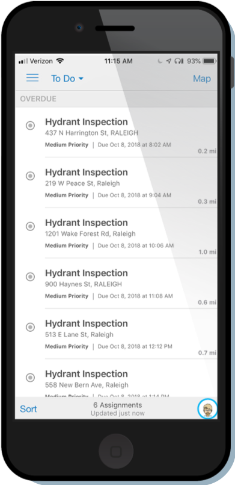
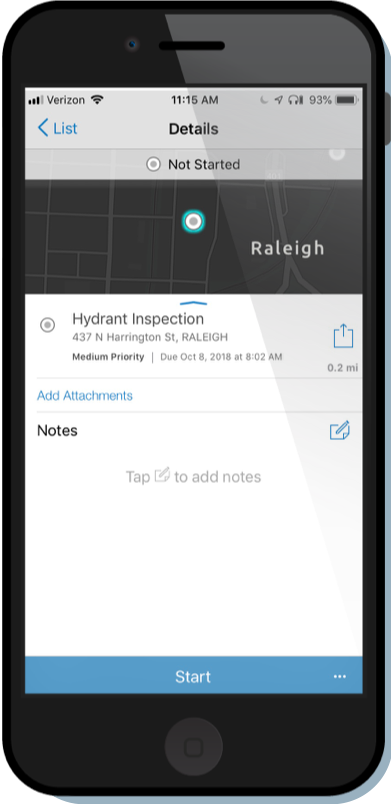
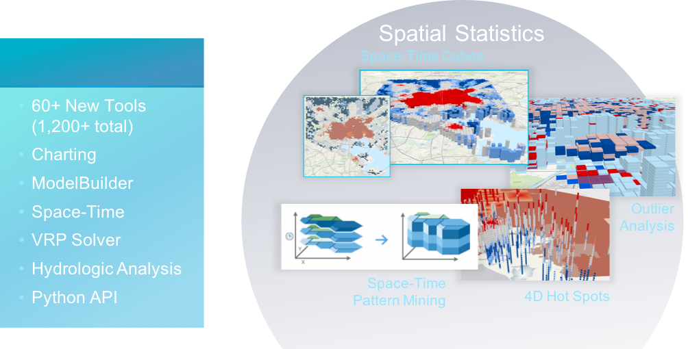
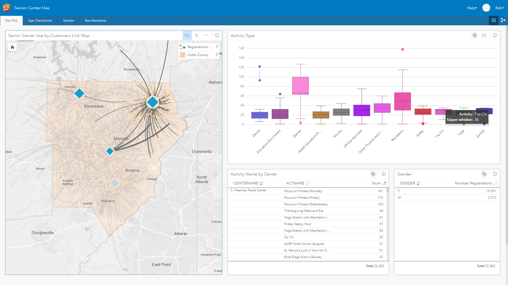
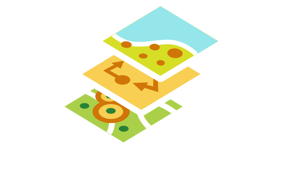
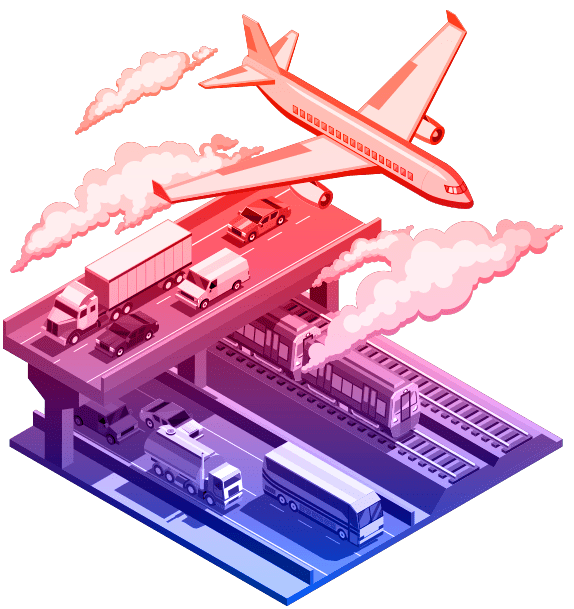

Esri's Smart Capabilities
### Meeting Topics - Current state of GIS - Review current and future initiatives - As a group how do you define success - Discuss any issues/road blocks - IT direction for the County, roadblocks, etc. - GIS strategic plan - Enterprise road map/architecture discussion - Citizen engagement - Open Data, Hub - Performance Management Dashboards - Need for data exploration -Insights - ArcGIS Solutions - ArcGIS Pro - New named user types - ArcGIS Apps - Training plan - Anything Else? <img width="45%" src="img/img/FieldOpsWorkflow.png">
### Esri Enables Smart Capabilities <img width="75%" src="img/img/SmartCapabilitiesNoProduct2.png">
### Capabilities - [Mobile](https://trello.com/c/0YzKaJnO/208-field-operations) - 3-6 Employees | 1HR daily - How to Distributing assignments? - How do I get to my work? - Capturing data on paper and re-coding <img width="45%" src="img/img/FieldOpsWorkflow.png">
## Workflow Details - User Friendly - Takes work locations - Splits into routes w/ optimize stop order - Pushes to dispatcher and field crews - **Assigned w/ Optimized stops** <img height="220px" src="img/img/process1.png">  
### Takeaways - Mobile - City of Durham - **[savings ~ $62,520 annually/labor costs](https://fowlerj9.github.io/esri-presentations-workforceassignwork/img/img/IdeaStarter.pdf)** - Equitable distribution of work, Efficient Workflow - [Public Communication](https://webgis.durhamnc.gov/myinspector/) - N. Augusta SC - Reduced response time from **33hrs to 8 hrs** - Reduced trips and Saves fuel and Mileage <img width="35%" src="img/img/FieldOpsWorkflow.png">
### Capabilities - Analytics - [311 in Insights](https://cltportal.esri.com/portal/apps/insights/index.html#/edit/667d8d4ab88d4923b0310a8c8ec1e642) <!--- [Cobb County Insights](https://cltportal.esri.com/portal/apps/insights/index.html#/edit/205505719b08475e8587cd38d64a9405)--> - Crime Analysis <!--- [3D Space Time Cube](https://eath.maps.arcgis.com/apps/Cascade/index.html?appid=9a27635635c940539b96fb5ef954e4d5)--> - [Citizen Problem Reporter Dashboard](http://links.esri.com/localgovernment/tryit/CitizenProblemDashboard/) <img width="35%" style="background:none; border:none; box-shadow:none;" src="img/img/analyticscity.png">
### Takeaways - Analytics  <img width="30%" src="img/img/cprdash.png">  - Exploratory Spatial Analysis - Visual, Intuitive, Dynamic, User Friendly - Fast Analysis - Key Performance Indicators (KPIs) - At-A-Glance Decision Making
### Capabilities - IoT and Big Data <img style="background:none; border:none; box-shadow:none;-moz-box-shadow:0px 0px 7px #000000;-webkit-box-shadow:0px 0px 7px #000000;box-shadow:0px 0px 7px #000000;-webkit-border-radius: 4px;-moz-border-radius: 4px;border-radius: 4px; " src="https://www.esri.com/content/dam/esrisites/en-us/arcgis/capabilities/real-time-gis/assets/real-time-gis_banner.png"> - [Marta Busses](https://ourcityc.maps.arcgis.com/apps/MapSeries/index.html?appid=83163416958348b8be603f02df7741a4) - [Are the Busses on Schedule?](https://cltportal.esri.com/portal/apps/opsdashboard/index.html#/f01868f82c6645b4b030dea774c21619) - [Lakeland Fl](https://lakelandflorida.maps.arcgis.com/apps/opsdashboard/index.html#/6b2e8485ecb74f3e888b7aa8961dce14) - [Temporal Filters](https://cltportal.esri.com/portal/home/webmap/viewer.html?webmap=d2602f69b74e4efab94400ec02a32a17)
### Takeaways - IoT and Big Data **+** **+** <img width="300px" style="background:none; border:none; box-shadow:none;" src="img/img/gadist.png">
### Capabilities - Solutions - [Solutions for Local Government](https://solutions.arcgis.com/#Local%20Government) - [Capital Improvement](https://trello.com/c/OsoHsEUA/216-capital-improvement-plan) - [Stabalize Neighborhoods](https://solutions.arcgis.com/local-government/planning-and-development/blight-properties/) - [Early Warning](http://ourcityc.maps.arcgis.com/apps/Minimalist/index.html?appid=71de37ad05524b458aee7c70f4168ed1) - Elections Management [Story Map](http://links.esri.com/localgovernment/tryit/GettingKnowElectionManagement/) and [Solution](https://solutions.arcgis.com/state-government/help/election-management/#try-it-now) 
### Takeaways - Solutions - Quickly address challenges - Free and Open Source - Supported by ESRI - Updated as tech moves forward <img width="50%" src="https://trello-attachments.s3.amazonaws.com/5b7b1a74ef82560323aabb84/5b7b1a74ef82560323aabb99/x/24e3b2317911ee3483524ea1ebc51d33/Screen_Shot_2018-07-31_at_3.54.14_PM.png">
### Capabilities - Planning and Development - [Orchestrate urban development](https://www.esri.com/en-us/landing-page/product/2018/arcgis-urban) - Create and manage plans and projects - Visualize current projects - Timely Decision-Making - Examine Community Indices and Scenario Indices - Engage with community stakeholders - Support public and private-sector collaboration
### Capabilities - Engagement - [City of Columbia Open Data](https://coc-colacitygis.opendata.arcgis.com) - [Reduce Infant Mortality](https://healthcare-access-columbus.opendata.arcgis.com) - [California Census](http://ca-census-cityx.hub.arcgis.com) - [Envision Columbia](http://envision-columbia-sc-ourcityc.hub.arcgis.com) <img width="60%" src="img/img/Hub-Picture23.png">
### Takeaways - Engagement - Data Driven - [Initiative Focus](https://hub.arcgis.com/admin/initiatives/gallery) - Community Engagement - Internal Collaboration <img width="70%" src="img/img/Hub-Picture16crop.png" style="margin: 0; background: none; border: 0px; box-shadow: none;">
### Next Steps... <!----> <img width="75%" src="img/img/SmartCapabilitiesNoProduct2.png">